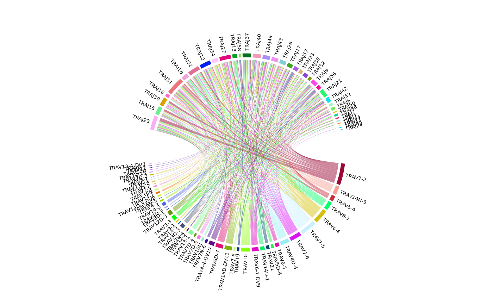

This function calculates the count or frequency of each combination by taking into account the weight of the chosen repertoire level: either "aaClone" or "ntClone".
It offers two types of visualization of the calculated VJ usage in a given sample, either a circos plot or a heatmap.
Arguments
- x
an object of class
RepSeqExperiment- sampleName
a character specifying the sample_id to analyze. Default is NULL, which plots the first sample in the dataset.
- scale
a character specifying whether to plot the VJ usage in "count" or "frequency".
- level
a character specifying the level of the repertoire to be taken into account when calculate VJ usages. Should be one of "aaClone" or "ntClone".
- prop
a numeric indicating the proportions of top VJ combinations to be plotted. It ranges from 0 to 1.
- plot
a character indicating the type of visualization in which the results will be represented, either a heatmap or a circos plot.
Examples
data(RepSeqData)#'
plotVJusage(x = RepSeqData, sampleName = NULL, scale = "count",
level="aaClone", prop=0.1, plot="Circos")
#> Plot the first sample in the dataset: tripod-30-813
#> Using to as id variables

plotVJusage(x = RepSeqData, sampleName = NULL, scale = "frequency",
level="ntClone", prop=1, plot="Heatmap")
#> Plot the first sample in the dataset: tripod-30-813
#> Using to as id variables